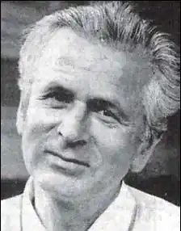
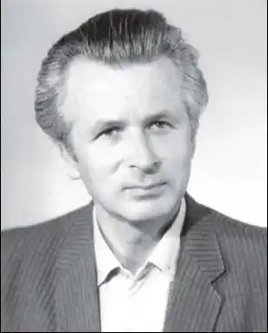

ЛУПІЙ Олесь Васильович — поет, прозаїк, драматург. Народився 28 березня 1938 року в с. Нова Кам’янка Жовківського р-ну на Львівщині. Після закінчення філологічного факультету Київського державного університету (1961) працював у редакціях газет "Молодь України" та "Літературна Україна", редагував альманах "Поезія". Із 1991 р. – відповідальний секретар Спілки письменників України, заступник голови СПУ.У 1994 р. за роман "Падіння давньої столиці" та повість "Гетьманська булава" удостоєний Національної премії України імені Т.Шевченка. заслужений діяч мистецтв України (1998 р.)
Перша збірка віршів "Віник юності" вийшла в 1957 р., потім – ще сімнадцять, серед яких найвідоміші: "Майовість", "Перевал", "Довголіття бджоли", "Кольорами предків", "Зелене весілля", "Золоті еклоги", а також "Милява", "Грань", "Нікому тебе не віддам", "Чоловіки не відчувають болю", "Лицарі помсти".
За сценаріями О.Лупія поставлені художні фільми "Багряні береги", "Малуша", "Данило – князь Галицький".